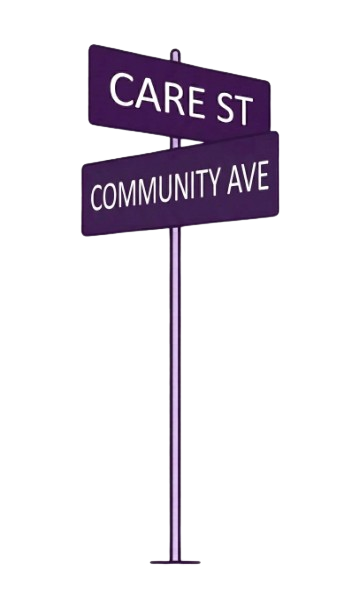
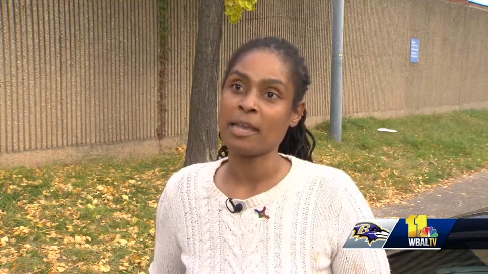
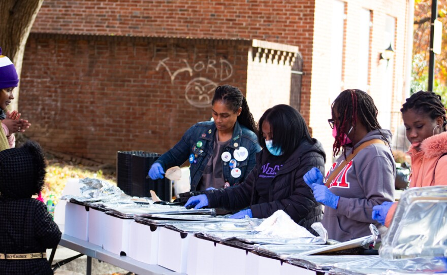

Sunday Dinner
Serving Sunday dinner between 2:30 and 4:00 PM.
Near St. Vincent de Paul
120 N Front Street
Baltimore, Maryland 21202.

At the corner of care and community
Serving Sunday dinner between 2:30 and 4:00 PM.
Near St. Vincent de Paul
120 N Front Street
Baltimore, Maryland 21202.
To practice restorative justice as acts of love by building community mutual aid, restoring through Sunday dinners, access to resources, and networking, and restoring the social fabric of Baltimore City.
To be the heart and soul of the community, providing access to services, opportunities, and education, to empower residents to work collaboratively and restore existing communities in Baltimore City.
If you practice servant leadership, have donations, or want to volunteer your time and talent, connect at auntbecksplacebaltimore@gmail.com.
Community care
Restorative justice
Aunt Becks Place is the traditional neighborhood spot where you are always welcome. There is always a listening ear, community support, and the kind of practical care that grows through food, fellowship, and faith in each other.
Built from lived experiences and dedication from inside and outside the classroom, Aunt Becks Place works to restore the village one meal at a time. Restorative justice is the motive path forward, and love remains the guiding force.
$AuntBecksPlace
$AuntBecksPlaceWeaves

